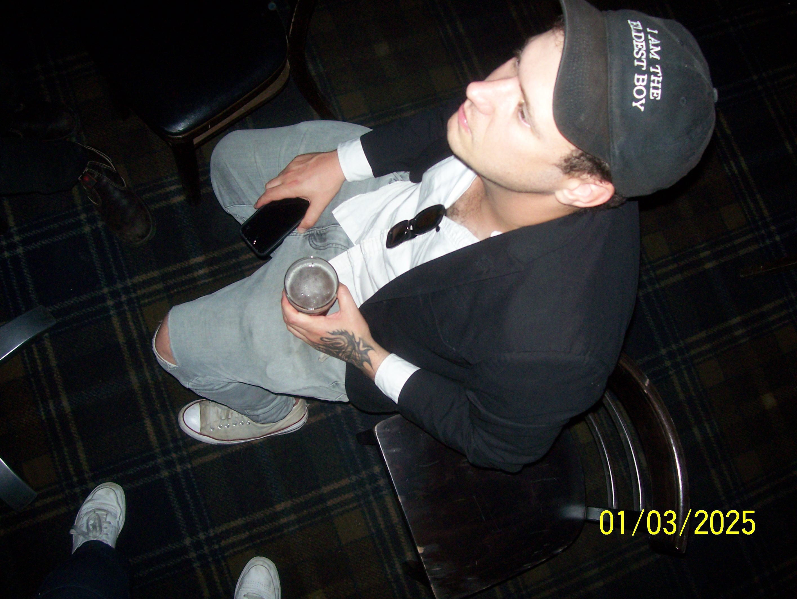

The Hungry Rope
Some words from me to you, away from the noise, somewhere off to the side.

The Ledger
- 2026.03.20 The First Cut: Reclaiming the Domain
- 2026.03.19 On Misfiring Code and Digital Ghosts
Some words from me to you, away from the noise, somewhere off to the side.
